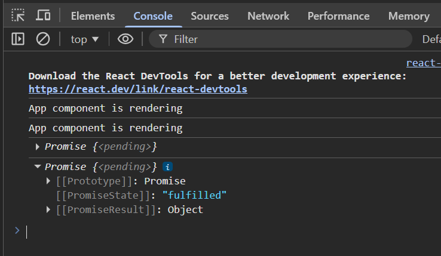
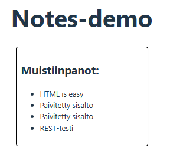
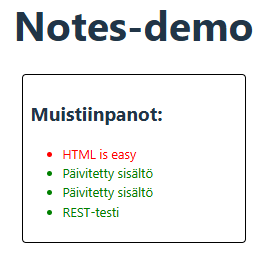
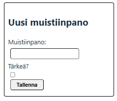
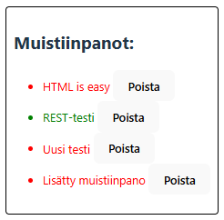
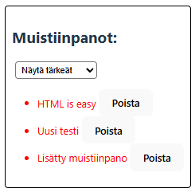

Notes-demo (2/2)
Projekti
Tehdään React-frontend jonka avulla hallitaan json-palvelimen tietokantaa. Siirry notesdemo-kansioon ja luo uusi React-projekti:
npm create vite@latest notesfront -- --template react cd notesfront npm i npm install axios --save npm run dev
Asensimme axios-kirjaston tietokannan käsittelyä varten React-sovelluksessa. Tietokannan käsittely onnistuu myös fetch-kutsujen avulla.
import { useState } from 'react'
import axios from 'axios'
import './App.css'
function App() {
const promise = axios.get('http://localhost:3001/notes')
console.log(promise)
return (
<>
<h1>Notes-demo</h1>
</>
)
}
export default App
axios palauttaa promisen joka voi olla joko pending (ei ole vielä tapahtunut), fulfilled (onnistunut) tai rejected (hylätty).

Viesti näkyy kahdesti koska Reactin StrictMode kutsuu render-funktiota kahdesti.
Muutetaan sovellusta siten, että otetaan mukaan tilamuuttuja notes johon tallennamme muistiinpanot:
import { useState } from 'react'
import axios from 'axios'
import './App.css'
function App() {
// tilamuuttuja muistiinpanoille
const [notes, setNotes] = useState([])
// haetaan notes:
axios.get('http://localhost:3001/notes')
.then(response => {
const notes = response.data
console.log(notes)
// tallennus tilamuuttujaan:
setNotes(notes);
})
return (
<>
<h1>Notes-demo</h1>
</>
)
}
export default App
Kun katsot konsoliin niin muistiinpanoja haetaan koko ajan. Tehdään siis lisäys jossa muistiinpanojen haku muutetaan funktioksi startHook ja tätä kutsutaan vain kerran silloin kun sovellus latautuu:
import { use, useState, useEffect } from 'react'
startHook:
const startHook = () => {
// haetaan notes:
axios.get('http://localhost:3001/notes')
.then(response => {
const notes = response.data
console.log(notes)
// tallennus tilamuuttujaan:
setNotes(notes);
})
}
useEffect(startHook, [])
Muistiinpanojen näyttäminen
Tee components-alikansioon uusi tiedosto Notes.jsx ja sinne komponentti Notes. Näytä komponentissa muistiinpanot listassa:

Muotoile tärkeät ja normaalit muistiinpanot eri näköisiksi. Tee App.css-tiedostoon tarvittavat tyylimäärittelyt. Notes-komponentilla voit vaihtaa luokan tyylin nimeä näin:
<li className={note.important ? "important" : "normal"}>

Muistiinpanon lisääminen
Lisää App.jsx-tiedostolle funktio addNote jonka avulla voidaan lisätä uusi muistiinpano. Koska osoite esiintyy useita kertoja koodin sisällä, se kannattaa erottaa omaan muuttujaan baseURL.
const baseURL = 'http://localhost:3001/notes';
addNote-funktio:
const addNote = (e, newNote, newImportance) => {
e.preventDefault();
const note = {
content: newNote,
date: new Date().toISOString(),
important: newImportance
};
axios.post(baseURL, note).then(response => {
console.log(response.data)
})
}
Tee uusi tiedosto NotesForm.jsx kansioon components. NotesForm lisää uuden muistiinpanon käyttäen addNote-funktiota.

import { useState } from "react";
const NotesForm = ({ addNote }) => {
const [newNote, setNewNote] = useState("");
const [newImportance, setNewImportance] = useState(false);
return (
<div className='divForm'>
<h2>Uusi muistiinpano</h2>
<form onSubmit={e => addNote(e, newNote, newImportance)}>
Muistiinpano:
<input onChange={e => setNewNote(e.target.value)}
name="note"
value={newNote}
type="text" />
Tärkeä?
<input onChange={e => setNewImportance(!newImportance)}
type="checkbox"
name="importance"
checked={newImportance} />
<input type="submit" value="Tallenna" />
</form>
</div>
)
}
export default NotesForm;
Kun muistiinpano lisätään niin se menee tietokantaasi. Tulos näkyy kuitenkin vast kun sivu päivittyy uudelleen. Lisää addNote-funktiolle console.log-rivin alle then-haaraan notes-tilaamuuttujan päivitys:
setNotes(notes.concat(response.data));
Muistiinpanon poistaminen

Poistaminen tapahtuu kutsumalla axios.delete-funktiota. Toteuta poisto toiminnolla samalla tavalla kuin lisäys. Lisää uusi funktio deleteNote App.jsx-tiedostolle. Muista lisätä tämä mukaan Notes-komponentille.
const deleteNote = (e, id) => {
e.stopPropagation();
axios.delete(`${baseURL}/${id}`)
.then(reponse => {
console.log("poistettu:", id)
setNotes(notes.filter(note => note.id !== id))
})
}
Notes-komponentilla kutsutaan poistamista painikkeen avulla. Lisää painike li-elementin sisälle:
<button onClick={e=>deleteNote(e, note.id)}>Poista</button>
Muistiinpanon tärkeyden muuttaminen
Tärkeyden muuttaminen muuttaa importance-arvon päinvastaiseksi. Lisää funktio changeImportance tiedostolle App.jsx ja vie se Notes-komponentille.
const changeImportance = (e, id) => {
e.stopPropagation();
// etsitaan id:n perusteella oikea note:
const tempNote = notes.find(note => note.id === id)
// muutetaan sen tärkeys:päinvastaiseksi:
tempNote.important = !tempNote.important
// tallennetaan axioksen kautta backendille:
axios.put(`${baseURL}/${id}`, tempNote)
.then(response => {
console.log("muutettu")
// etsitään vanha muistiinpano ja korvataan se uudella:
const tempNotes = notes.map(note => {
if (note.id === id)
note = tempNote
return note
})
// tallennetaan muutokset tilamuuttujaan:
setNotes(tempNotes)
})
}
Jotta muistiinpanot näkyvät oikein ilman sivun päivittämistä myös notes-tilamuuttuja tulee päivittää muuttamisen jälkeen. Tämä vaatii tempNotes-apumuuttujan käyttämistä: haetaan nykyiset muistiinpanot ja päivitetään oikean id:n muistiinpano muutetulla.
Tärkeys muuttuu klikattaessa li-elementtiä. Lisää onClick-metodi Notes-komponentilla li-elementin sisälle:
onClick={e=>changeImportance(e, note.id)}
Viestin näyttäminen käyttäjälle
Lisätään sovellukselle viesti onnistuneesta toiminnosta. App.jsx tarvitsee aluksi uuden tilamuuttujan.
const [message, setMessage] = useState("");
Lisää App.jsx-tiedostolle uusi funktio messageHook jossa näytetään viesti viiden sekunnin ajan. messageHook tarvitsee oman useEffect-ohjaimen.
const messageHook = () => {
if(message !== ""){
const timer = setTimeout(()=>setMessage(""), 5000);
return () => clearTimeout(timer);
}
}
useEffect(messageHook, [message]);
Päivitä setMessage-funktion avulla viesti aina kun toiminto on tehty onnistuneesti.
setMessage("Muistiinpano poistettu");
Viesti pitää vielä saada näkyviin, lisää seApp.jsx-tiedostoon
{message && <div className='message'>{message}</div>}
Lisätehtävät
Muistiinpanojen suodattaminen
Lisää toiminnallisuus muistiinpanojen suodattamiselle select-ohjaimen avulla. Ohjaimesta voidaan valita näytettäväksi tärkeät, normaalit tai kaikki muistiinpanot.

Lisää Notes-komponentille select-ohjain, kun ohjain muuttuu (onChange) niin päivitä tilamuuttujaa filter sen päivitysfunktion setFilter avulla.
Lisää Notes-komponentille ennen return-osaa tarkistus mikä arvo on valittuna. Oletuksena valitaan kaikki apumuuttujaan filteredNotes.
let filteredNotes = notes; // oletus kaikki
if (filter === "tärkeät") {
// jos filter niin suodatetaan
filteredNotes = notes.filter(n => n.important === true)
}
if (filter === "normaalit") {
// jos filter niin suodatetaan
filteredNotes = notes.filter(n => n.important === false)
}
Muuta notes.map-kutsussa notes-muuttujan tilalle filteredNotes.
Virheilmoituksen näyttäminen
Lisää uusi errorMessage ja tälle oma errorHook. Muotoile virheilmoitus tyylitiedoston avulla.
Virheilmoitus tulisi näyttää esimerkiksi jos käyttäjä yrittää syöttää tyhjän muistiinpanon. Voit lisätä virheilmoituksen myös then-metodin catch-haaraan:
axios.delete(`${baseURL}/${id}`)
.then(reponse => {
...
})
.catch(error => {
console.log(error);
setErrorMessage(`Muistiinpanon poisto epäonnistui ${error}`);
})